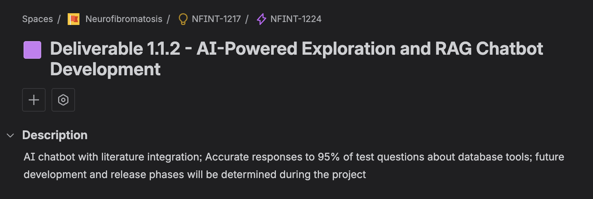
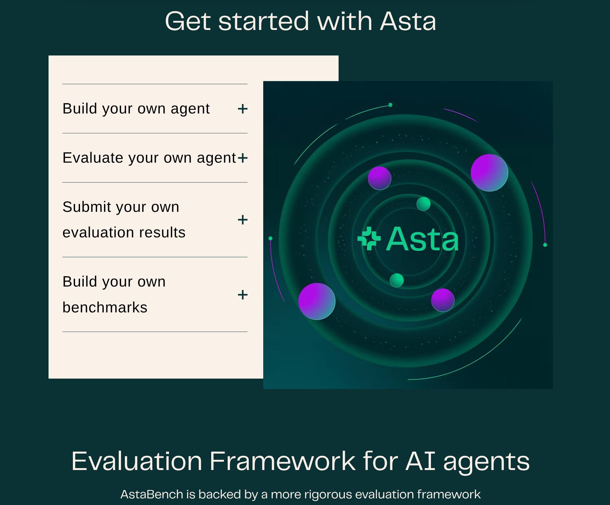
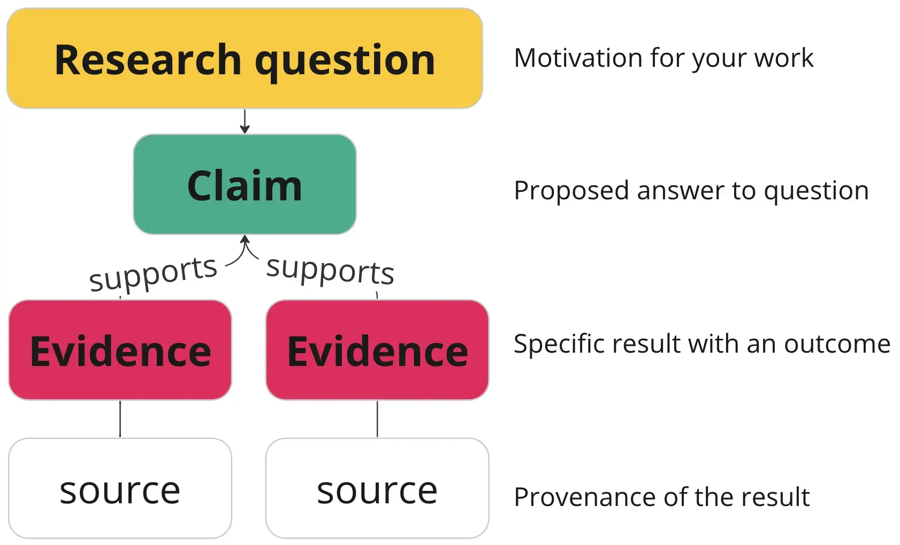
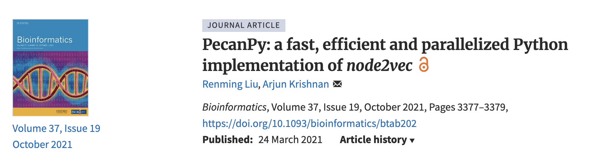

SciData Showcase
March 25, 2026

SSSOM Simple Standard for Sharing Ontology Mappings · RML RDF Mapping Language · QLever High-performance graph engine · PubTator Biomedical entity annotations (genes, diseases, variants…)
* Currently using “QLever”; also testing loading and configuration in Amazon Neptune for managed graph infrastructure

Tests the KG's ability to answer structured queries about portal entities.
Tests the publication text index on factual questions grounded in NF papers.
These questions are not easily handled by portal tables — they require joins and/or aggregation across multiple entity types
"Find transplantation mouse models (xenografts) and related donor cell lines"
Xenograft-to-cell-line donor traversal — understand tumor source and plan matched in vitro experiments
1b604846-d41c-4969-a79a-9660c04e585c
c8a807e4-502b-461c-a60f-fd10b3cde70e
"Find human cell lines with the most diverse data types available on the portal"
Bioinformatics & multi-omics analysis — existing characterization data may inform model selection for future experiments
5502caf5-4cf1-418f-bf50-164cfa316b0f
b44361f2-9021-4920-901a-b1a1f9143f97
be2333d6-6716-4d13-947d-41f4198497a4
Ground truth = sets of Synapse entity IDs — eval checks whether the model retrieves the correct resources, not just a plausible-sounding description
"which nf1 variant in exon 13 for morpholino?"
What is the specific genetic variant in exon 13 of the NF1 gene that creates an intragenic cryptic splice site potentially addressable with morpholino therapy?
Ideal: The recurrent pathogenic variant c.1466A>G (p.Y489C) in exon 13 creates an intragenic cryptic splice site, resulting in a 57 nt deletion producing an in-frame deletion of 19 amino acids.
Answer grounded in passages 1, 5 of PMC8705852 — model must also cite the correct source passages
Per-patient variant call files transformed into graph nodes, linking patients to specific genomic variants, allele frequencies, and affected genes — enabling population-level queries across the cohort.
Histology, MRI, and microscopy images encoded as vector embeddings and stored as graph node properties, enabling similarity-based retrieval alongside structured metadata.
Currently out of scope and would need governance review
What if researchers could annotate hypotheses and in-progress findings directly onto each data file in Synapse? Those annotations could flow into the KG as a queryable, creditable layer of researcher knowledge.
Organizes research as modular graphs of evidence and claims. Distinguishes evidence from claims, supports multiple interpretations, researcher-controlled.
🔗 discoursegraphs.com
Spotify built a graph over queries, songs, artists, genres, and topics, then applied node2vec to learn vector representations of all entities. These embeddings power real-time query suggestions in instant search.
The current KG supports SPARQL queries and RAG retrieval. Graph learning can go further — embedding the graph structure itself to power richer discovery.
